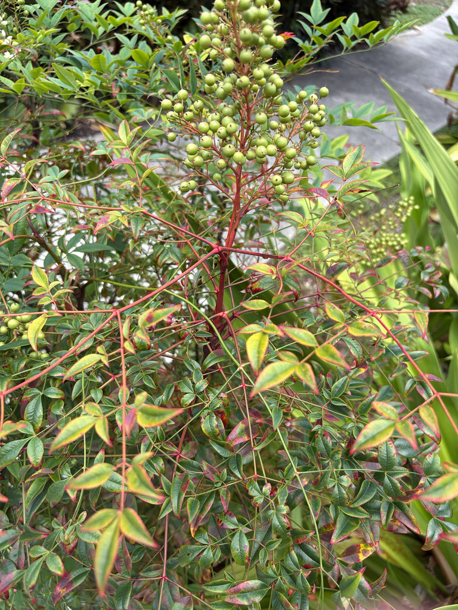

- Not bamboo. Not even distantly related to bamboo. The resemblance is in the cane-like stems and compound leaves — the botany is completely different.
- FISC Category I invasive in Florida — the highest listing. Spreads into natural areas via bird-dispersed seeds. Birds eat the berries readily, which is part of the problem.
- The berries contain cyanogenic glycosides — generally tolerated in small amounts, but capable of killing voracious feeders like Cedar Waxwings that gorge on them.
- This specimen is kept as an educational example — a demonstration of why a plant can be beautiful, popular, and ecologically harmful simultaneously.
Non-native. Native to eastern Asia from the Himalayas through China to Japan. Member of Berberidaceae — the barberry family. Introduced to the United States in the early 1800s as an ornamental.
- Heavenly Bamboo is a Category I invasive in Florida — the highest FISC designation — yet it remains widely sold and planted in Florida landscapes. The combination of attractive appearance, easy care, and bird-dispersed red berries has made it a persistent presence in nurseries even as its ecological damage is well documented.
- It spreads into woodlands and floodplains and displaces native vegetation.
- One question visitors often ask is what the species name domestica means. It points to household — fitting for a plant with a long domestic history across China and Japan, where it was traditionally planted beside the front door as a sacred protector, believed to ward off misfortune and dissipate bad dreams.
- There is a quiet irony in that: a plant once set out to guard the home is, in the southeastern United States, one of the more destructive escapees from cultivation.
- The berry toxicity story is specific and documented. Veterinary pathologists in Georgia documented dozens of Cedar Waxwings that died after gorging on Nandina berries, with tissue hemorrhaging consistent with cyanide poisoning. The leaves and unripe green berries are highly cyanogenic; ripe red berries release cyanide more slowly and become less toxic as they age on the plant.
- Most birds consuming small quantities are unaffected, but Cedar Waxwings are voracious feeders that can consume large quantities quickly, pushing past the safe threshold.
- Two cultivars — Harbour Dwarf and Firepower — are considered lower-risk alternatives by UF/IFAS assessment (they rarely fruit, limiting spread). The standard species is not recommended for planting in Florida.
- This plant is kept here as an educational specimen in the Invasive Awareness context.
Nandina poses a paradox of wildlife value: its bright berries are readily eaten by Cedar Waxwings and other frugivorous birds, but that very service is the harm. The risk is not a single bird taking a few berries — it is the cumulative dispersal of seed into native woodlands and floodplains, where new invasive populations establish far from any garden.
A food source that ultimately works against the ecosystem feeding on it.
Small, white, in upright clusters in spring. Not ornamentally significant.
Bright red berries in clusters, persisting into winter. Highly attractive to birds. Contains cyanogenic compounds — toxic in quantity, particularly to species that feed rapidly in large amounts.
Compound, with small pointed leaflets that turn red-orange in cool weather. New growth often reddish. Bamboo-like cane stems with multi-leafed, fern-like compound foliage.
Upright evergreen shrub, 4 to 8 feet tall, with slender cane-like stems.
The compound foliage on bamboo-like stems and the red berry clusters in fall and winter. Compare to true bamboo: Nandina has compound leaves (many leaflets on one stem), true bamboo has simple leaves.
Do not eat any part of this plant — all parts contain cyanogenic glycosides that break down into hydrogen cyanide.
Casual contact is low-risk to people, but swallowing berries or leaves should be avoided and reported to Poison Control.
It's more dangerous to pets: toxic to dogs and cats, where ingestion can cause hemorrhaging and may be fatal.
Keep pets away, and contact your vet or Poison Control immediately if you suspect ingestion.
This one is tucked into a small, easy-to-miss spot on Welcome Island, largely crowded out by the Tree Crinum mass planting around it — and it usually looks a little unkempt thanks to its different coloring. Whether it is the Tree Crinums holding it back or simply the nature of a single contained specimen, we have seen zero evidence of spread here.
That fits the larger picture: Nandina's documented harm comes from birds carrying its seed into natural areas, not from one hemmed-in garden plant — which is exactly why it stays here as a teaching example rather than a recommendation.

- © Randall Carter (CC-BY-NC), via iNaturalist